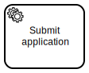

Service tasks for Robots
We are soon ready to start implementing BPMN  service tasks in Robot Framework and let Camunda Platform Zeebe to be used for orchestrating  Robot Framework automation. There’s only one remaining issue:
Robot Framework automation. There’s only one remaining issue:
Robot Framework is a generic automation framework. How should we use it specifically with Camunda Platform?
(TL;DR; With a custom Camunda worker and RPA framework work items adapter.)
Tasks are work items
On Zeebe, activated instances of BPMN service tasks are called jobs at Zeebe gRPC API. Robocorp, in their RPA framework, introduced a library for managing data as work items, and are committed to support work items in all of their tools.
RPA framework work items supports configurable adapter pattern: its behavior can transparently adapted to current run time environment. By adapting job payload from service task instances to be compatible with the work items library, everything could just work as the library documentation suggests.
And that’s exactly, what our RCC integration concept, parrot-rcc does: BPMN tasks are adapted to work items, and Robocorp’s docs and tools are all you need to build compatible Robot Framework automation.
The following examples are adapted directly from RPA Framework keyword documentation…
Reading variables
All Zeebe job variables are made available as such, and can be using work items keywords as documented.
*** Settings ***
Library RPA.Robocorp.WorkItems
*** Tasks ***
Use variables from Camunda external service task
Set task variables from work item
Log Variables are now available : ${user}, ${mail}
Writing variables
All variables set into output work item are saved back to Zeebe as local variables at the job’s scope.
*** Settings ***
Library RPA.Robocorp.WorkItems
*** Tasks ***
Save variables to Camunda external service task
Create Output Work Item
Set work item variables user=Dude mail=address@company.com
Save Work Item
Writing files
Zeebe does not support files as variables, but playground’s RCC integration stores files transparently into configured S3 compatible storage, and saves time-limited download links as local variables at the job’s scope.
*** Settings ***
Library RPA.Robocorp.WorkItems
*** Tasks ***
Save file to runtime environments storage
Create Output Work Item
Add work item file output.xls
Save Work Item
Reading files
Zeebe does not support files as variables, but playground’s RCC integration loads properly located files transparently from configured S3 compatible storage (it greates time-limited download links for the files, and they are downloaded only when requested using work items library keywords).
*** Settings ***
Library RPA.Robocorp.WorkItems
*** Tasks ***
Load file from runtime environments storage
${path}= Get work item file input.xls
Open workbook ${path}
Failing for retry
Similarly to work items library, also Camunda Platforms (including Zeebe) separate purely technical application errors from process related business errors. The following example would allow Zeebe to retry the task for the amount allowed in its process model:
*** Settings ***
Library RPA.Robocorp.WorkItems
*** Tasks ***
Publish report
Set task variables from work item
TRY
Login Keyword ${user}
Upload Doc Keyword ${doc}
EXCEPT Login Failed
Release Input Work Item FAILED
... exception_type=APPLICATION
... code=LOGIN_PORTAL_DOWN
... message=Unable to login, retry again later.
Fail # stop execution
END
Throwing errors
This example, would allow BPMN error to be expected and handled in process model:
{kind=link}
*** Settings ***
Library RPA.Robocorp.WorkItems
*** Tasks ***
Publish report
Set task variables from work item
TRY
Login Keyword ${user}
Upload Doc Keyword ${doc}
EXCEPT Format Error AS ${err}
${message} = Catenate
... Document format is not correct and cannot be uploaded.
... Correct the format in this work item and try again.
... Full error message received : ${err}
Release Input Work Item FAILED
... exception_type=BUSINESS
... code=DOC_FORMAT_ERROR
... message=${message}
Fail
END